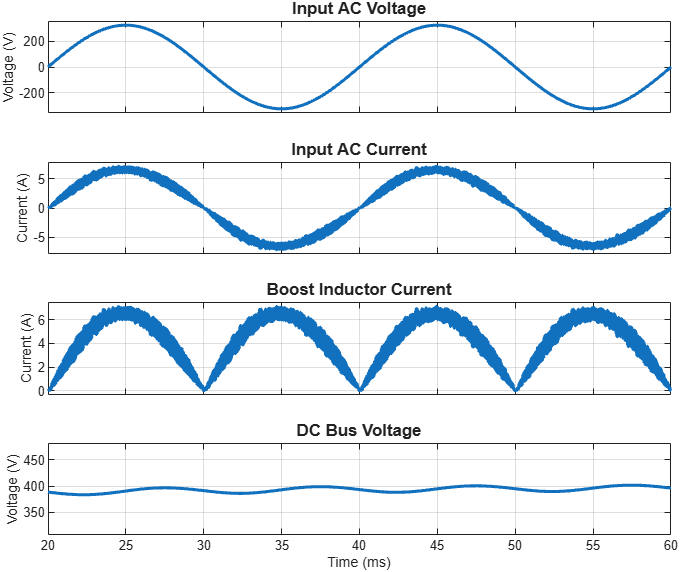

Simulate converter and plot its voltage and current waveforms
ivData = getConverterWaveforms(modelName,Converter=key)[ivData,simulationLog] = getConverterWaveforms(___)ivData = getConverterWaveforms(modelName,Converter=key) simulates the converter model modelName with ideal devices at the operating point you set by name-value arguments, and plots the voltage and current waveforms that the converter registry lists for key. The function restores the device options of the plant block when it finishes.
[ivData,simulationLog] = getConverterWaveforms(___) also returns the signal-logging data of the run.
Simulate the boost PFC model at a 400 V bus and 1000 W load, and plot the last two 50 Hz line cycles.
ivData = getConverterWaveforms("BoostPFCConverter",Converter="BoostPFC", ...
Vref=simscape.Value(400,"V"),Pload=simscape.Value(1000,"W"), ...
SimTime=simscape.Value(60e-3,"s"),FrequencyHz=50,FocusCycles=2);
The example produces this figure.

modelName - Name of converter modelName of the converter model to simulate, specified as a character vector or string scalar. The model must contain the plant block that the registry entry names.
Converter - Converter registry keyKey of the converter in the converter registry, specified as a character vector or string scalar, for example "BoostPFC". This argument is required. Default: none
Vin - Input voltageInput voltage of the operating point, specified as a simscape.Value object with a unit of voltage or as a numeric scalar in volts. Default: [], which keeps the value saved in the model
Vout - Output voltageOutput voltage of the operating point, specified as a simscape.Value object with a unit of voltage or as a numeric scalar in volts. Default: [], which keeps the value saved in the model
Vref - Reference voltageReference voltage of the controller, specified as a simscape.Value object with a unit of voltage or as a numeric scalar in volts. Default: [], which keeps the value saved in the model
Iref - Reference currentReference current of the controller, specified as a simscape.Value object with a unit of current or as a numeric scalar in amperes. Default: [], which keeps the value saved in the model
Iin - Input currentInput current of the operating point, specified as a simscape.Value object with a unit of current or as a numeric scalar in amperes. Default: [], which keeps the value saved in the model
Iout - Output currentOutput current of the operating point, specified as a simscape.Value object with a unit of current or as a numeric scalar in amperes. Default: [], which keeps the value saved in the model
Pload - Load powerLoad power of the operating point, specified as a simscape.Value object with a unit of power or as a numeric scalar in watts. Default: [], which keeps the value saved in the model
ControlMode - Control modeControl mode of the controller, specified as "voltage" or "current". Default: '', which keeps the mode saved in the model
PowerFlowDirection - Power flow directionDirection of power flow for a bidirectional converter, specified as "forward" or "reverse". Default: '', which keeps the direction saved in the model
SimTime - Simulation stop timeStop time of the simulation, specified as a simscape.Value object with a unit of time. Default: simscape.Value(0.015,"s")
FocusCycles - Number of displayed cyclesNumber of cycles at the end of the run to display, specified as a positive scalar. The function uses this value only when you set FrequencyHz. Default: 5
FrequencyHz - Frequency of displayed cycleFrequency of one displayed cycle, in hertz, specified as a positive scalar. When this value is empty, the function displays the last 5% of the run. Default: []
MaxStep - Maximum solver stepMaximum step size of the solver, in seconds, specified as a positive scalar. Default: [], which keeps the setting saved in the model
Interactions - Keep axes interactionsOption to keep the default axes interactions and the axes toolbar, specified as a numeric or logical 0 (false) or 1 (true). Default: false
ivData - Plotted signal dataPlotted signal data, returned as a structure with one field per signal. Each field contains the Data and Time of that signal.
simulationLog - Signal-logging data of the runSignal-logging data of the run, returned as a Simulink®.SimulationData.Dataset object.
simulationLog for a harmonic analysis, set MaxStep to a value smaller than one switching period.plotLoggedSignals | estimateConverterHarmonics | getConverterPowerLoss | converterRegistry | setConverterFidelity | Power Converter Utilities